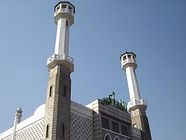
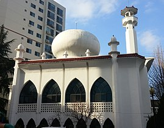
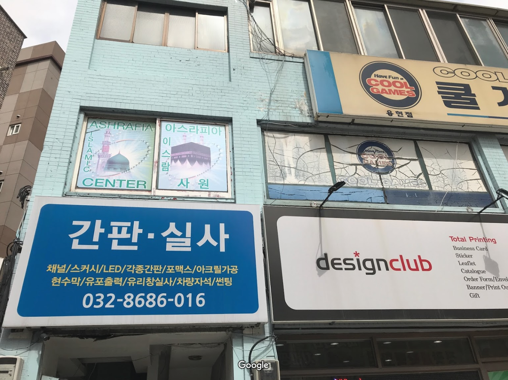
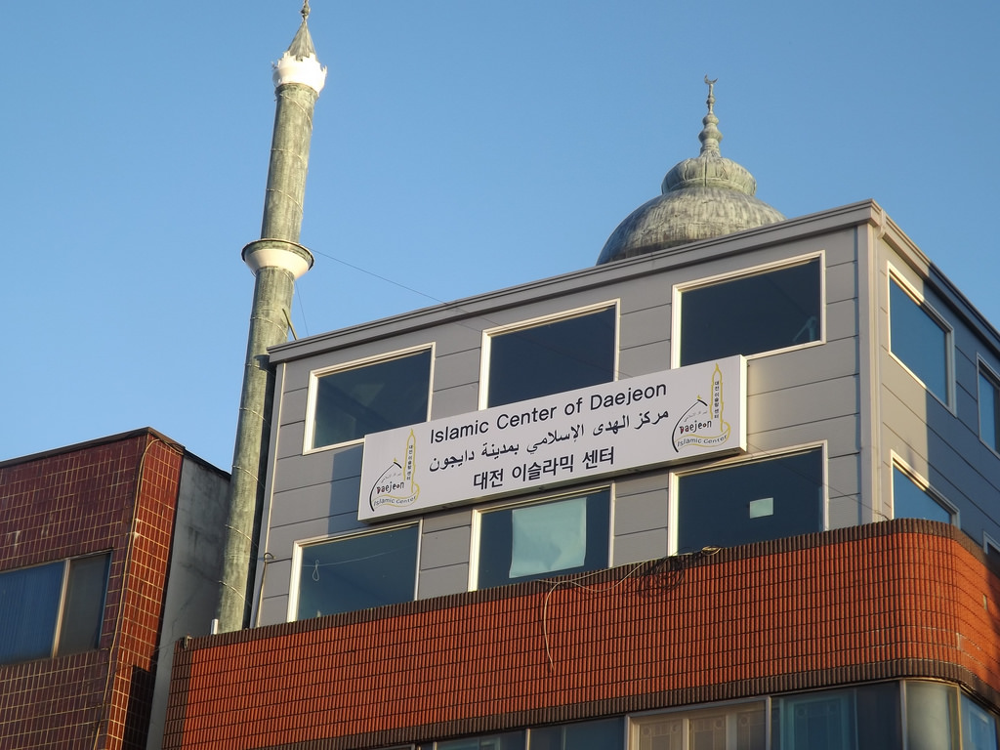
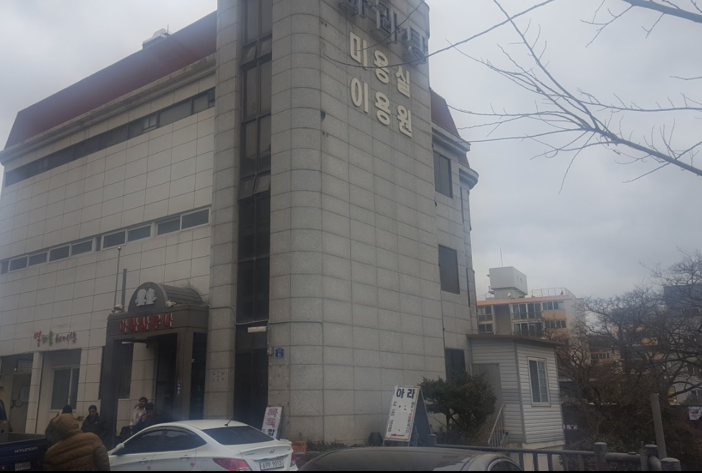
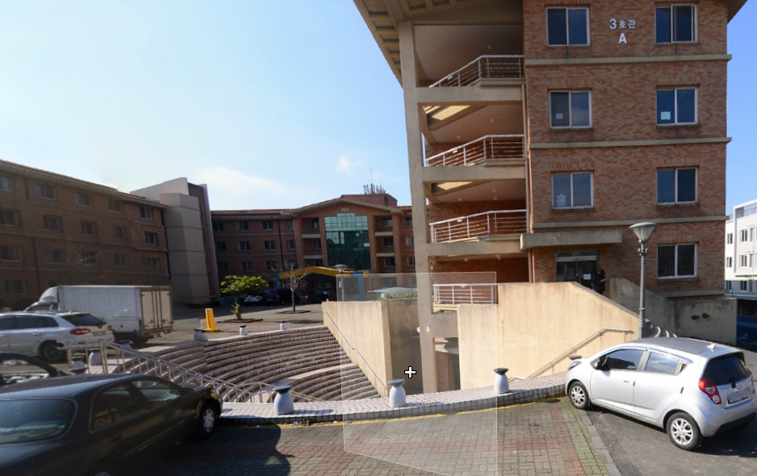

Masajid - Prayer Rooms/Places in South Korea

Seoul Central Mosque
Seoul - 1976
Map

Busan Al-Fatah Mosque
Busan - 1980
Map

Ashrafia Mosque Inha
Incheon - 2005
Map

Islamic Center of Daejeon
Daejon - 2006
Map

Masjid Ashrafia Jeju
Jeju - 2018
Map

Jejunu Prayer Room
Jeju - 2018
Map